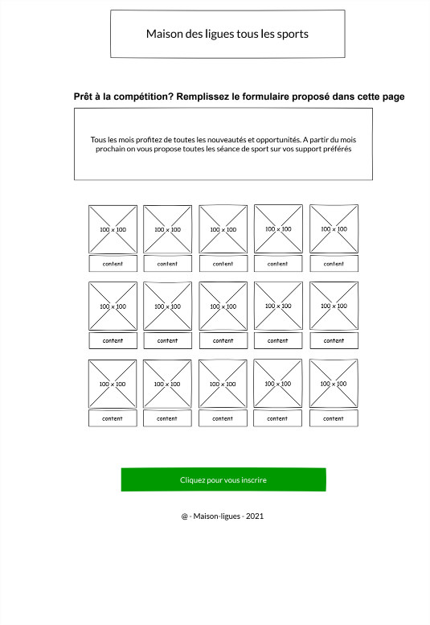

AP Web

Sujet
Une agence nous confie la réalisation d’une page publicitaire pour la Maison de ligues sur le web. La promotion a pour but de conquérir des nouveaux abonné(e)s, en proposant la diffusion de toutes les compétitions sportives. Pour cela nous conseille d’abord d’analyser toutes les fonctionnalités au travers des deux wireframes. Les spécifications pour le fonctionnement de chaque partie ne sont pas définies. La charte graphique doit être crée par vous.
Pour commencer vous devez tout simplement mettre en place une structure html sémantique car le contenu de cette publication est destiné à tout public. Penser à produire un code optimisé pour les moteurs de recherche à l’indexation de l’information.
Maquette
- 

Réalisation
Réaliser une interface d’admin gestion client
Cette partie du site a pour but de permettre aux administrateurs des Maisons des ligues, de recenser leurs clients. Pour ce faire, il faut créer une interface admin qui permet d’ajouter un client, modifier sont profile ou le supprimer.
Aspect fonctionnel
Vous devez créer toute la partie gestion. Pour les enregistrements à publier il faut créer une page avec un formulaire de 4 champs : Nom, Prénom, Age et adresse électronique. Tous les champs sont obligatoires. Afficher un warning dans le cas l’administrateur ne renseigne pas un champ.
Base de données

Aspect technique
Les technologies autorisées sont : html5 css3, js et php orienté objet Police de caractères : ‘Open Sans’, sans-serif Iconographies obligatoires de votre choix La couleur des thèmes doivent être indexée dans des variables css Le code HTML généré doit être valide selon les normes du W3C et tester également, pour les spécificités de la WAI et du WCAG (accessibilité) Votre rendu sera publié sur un dépôt Github. Celui ci doit avoir une structure logique, contenir un readme.md avec présentation du projet et un fichier « .gitignore » si besoin.
PHP
Connexion à la base de données
Envoie des données d'inscription à la base de données.